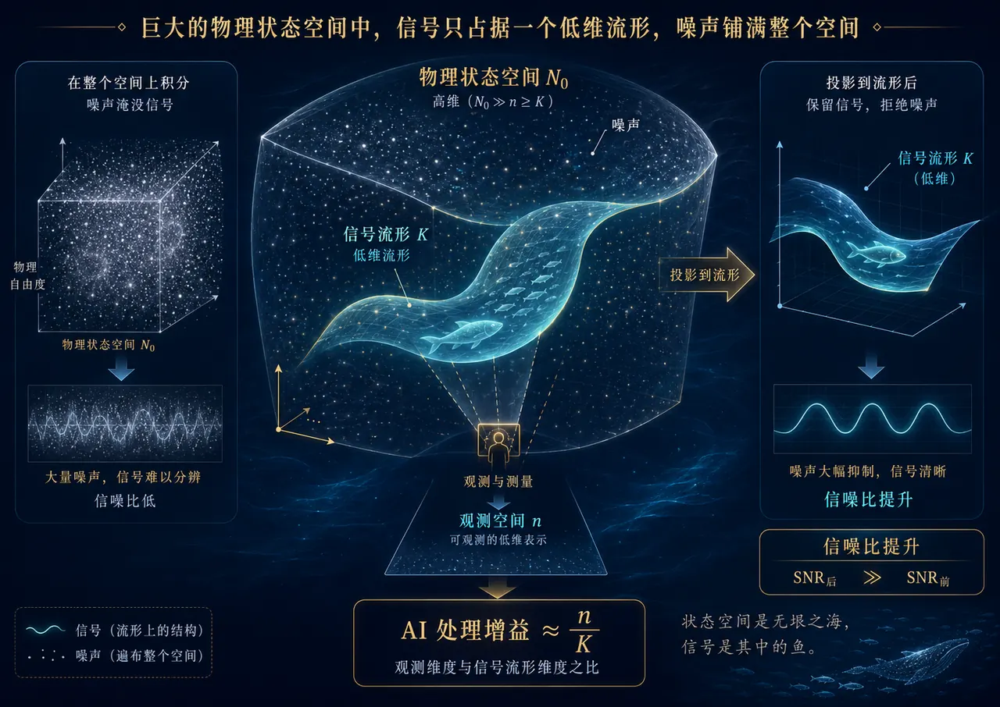
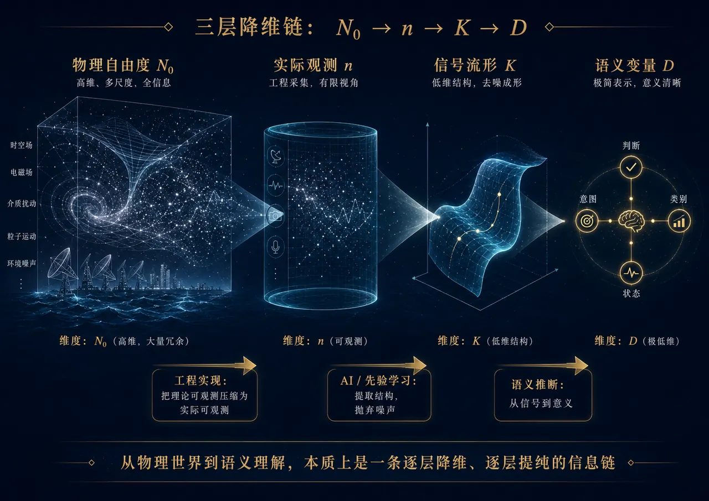
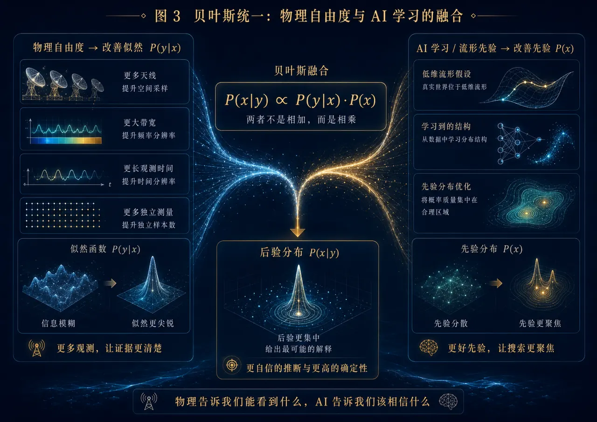
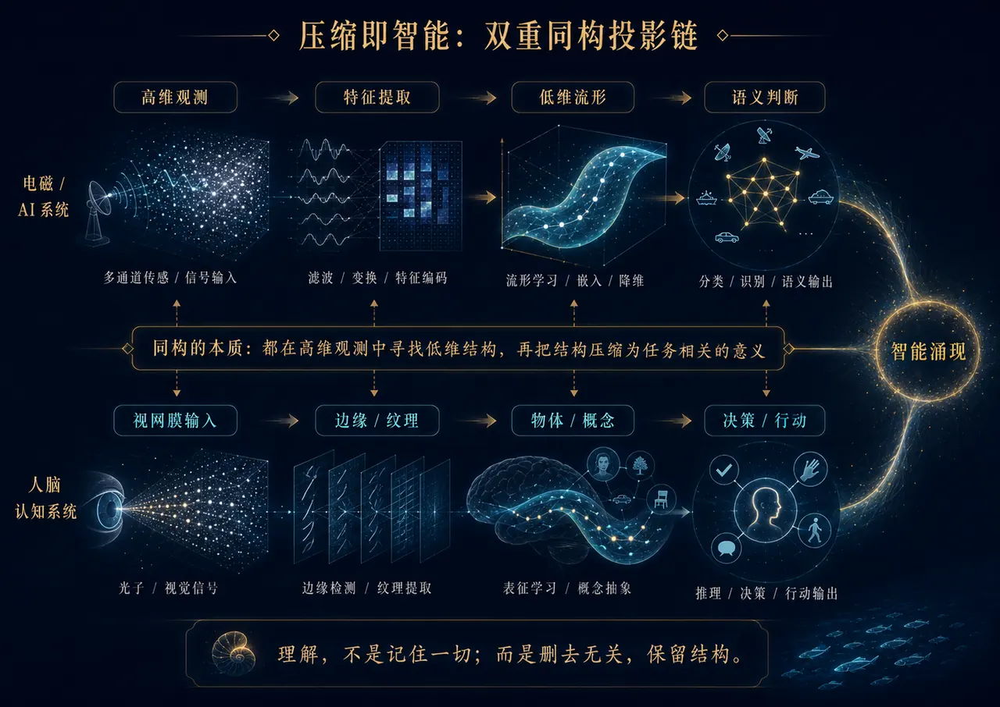

世界太大，信号太少
对于电子信息类专业的人，或者说任何生活在信息时代的人，一个核心问题是：为什么智能能够从数据中涌现？为什么 AI 能从海量样本里学会“猫”“狗”“人脸”？为什么雷达能从复杂电磁波里判断目标意图？为什么人脑面对海量光子输入，却不会被淹没？
这些问题表面上分属物理、信号处理、机器学习和认知科学，但背后有同一条主线：世界提供了巨大的可能性空间，而真正有意义的信号只占据其中很小的一片结构。
因此，智能不是把世界完整复制一遍，而是在巨大的可能性空间中，找到最小但最有用的表示。
智能的第一步，不是计算更多，而是排除更多。
从“处理所有数据”到“保留有意义的结构”，是信息系统走向智能的关键跃迁。
真实信号为什么是低维的
一个系统的物理自由度可以非常大。以电磁波为例，时间、频率、空间口径、极化方式共同构成了一个高维状态空间。把这个理论空间记为 N₀，它代表世界给出的全部可能性。
但状态空间大，不等于有效信息多。真实信号并不会均匀填满整个空间，而是被它的产生机制强烈约束。例如一张真实人脸照片，不可能是任意像素组合；一个通信波形，也不可能是任意随机曲线。
这些约束把真实信号压缩到一个低维结构上。数学上可以称为流形；直觉上，它就是“信号可能出现的地方”。
信号产生链条
→ 信道编码
→ 调制符号
→ 基带波形
→ 射频信号
→ 天线辐射
每一步都在施加约束。不是所有状态都有意义，不是所有波形都可能由真实系统产生。
理想情况下，信号保留在 K 维流形上，而噪声从 n 个方向减少到 K 个方向。公式不是魔法，它依赖“信号确实低维、投影足够准确、分布没有严重漂移”等前提。
从物理自由度到语义理解

第一层 N₀ → n 由物理系统和工程设计决定：天线有限、带宽有限、观测时间有限、计算资源有限。第二层 n → K 是滤波、压缩、AI 学习与先验建模发挥作用的地方。第三层 K → D 则是从信号结构进入语义判断。
一张图片可能有几百万像素，但最终判断也许只是“猫 / 狗 / 人 / 车”；一段雷达波形可能细节丰富，但最终关心的只是“路过 / 侦察 / 攻击”。这就是语义层面的极限压缩。
物理观测与 AI 先验如何合流
后验 = 似然 × 先验。物理自由度让证据更清楚；AI 学习让搜索更聚焦。两者不是相加，而是相乘。

物理自由度改善似然
更多天线、更大带宽、更长观测时间、更高采样率，都会让观测更充分。观测越充分，似然函数越尖锐，我们越能分辨不同状态。
AI 学习改善先验
AI 通过数据学习“什么样的信号更可能出现”。它让系统不再把概率浪费在不可能的状态上，从而把搜索空间压缩到可信区域。
理解也是一种降维
从信号到语义，很多人会觉得像一次神秘跳跃。但从贝叶斯角度看，它仍然是同一件事：用证据更新判断。
假设我们要判断目标意图：普通路过、侦察、攻击准备。每一个观测都会更新一次判断：脉冲频率、波束扫描模式、运动轨迹、发射功率变化、协同行为……如果这些证据都指向同一个解释，后验概率就会越来越集中。
在物理空间中，相干积累表现为波形对齐后能量增强；在语义空间中，相干积累表现为多个证据共同指向同一个解释。
| 任务 | 应该保留 | 可以压缩掉 |
|---|---|---|
| 识别物体 | 形状、轮廓、局部结构 | 光照、背景、角度 |
| 判断时间 | 光照、阴影、色温 | 物体类别 |
| 判断真假 | 高频细节、压缩伪影 | 大部分语义内容 |
| 判断情绪 | 表情、眼神、嘴角变化 | 背景纹理 |
人脑、AI 与信号处理的同构链条

AI 的链条
→ 局部特征
→ 中层结构
→ 高层语义
→ 任务输出
人脑的链条
→ 边缘和纹理
→ 局部形状
→ 物体类别
→ 行动决策
理解，不是记住一切；而是删去无关，保留结构。
好的压缩不是丢数据，而是知道什么可以丢、什么必须留。AI 不是魔法，先验也会误导
先验的作用是缩小搜索空间。但如果先验错了，它也会把正确答案排除掉。这对应人类认知中的偏见，也对应 AI 系统中的幻觉和误判。
所以智能不是“有先验”就够了，而是要有可更新的先验。贝叶斯公式真正重要的地方就在这里：先验必须被观测不断修正。
物理自由度 → 实际观测 → 信号流形 → 语义理解
智能涌现于高维数据的可压缩性。
如果数据不可压缩，就没有模式；如果有模式但系统学不到，就没有智能；如果学到了模式但不能用于任务，也不叫真正的智能。真正的智能，是面向目标地压缩信息，并用压缩后的结构指导判断和行动。